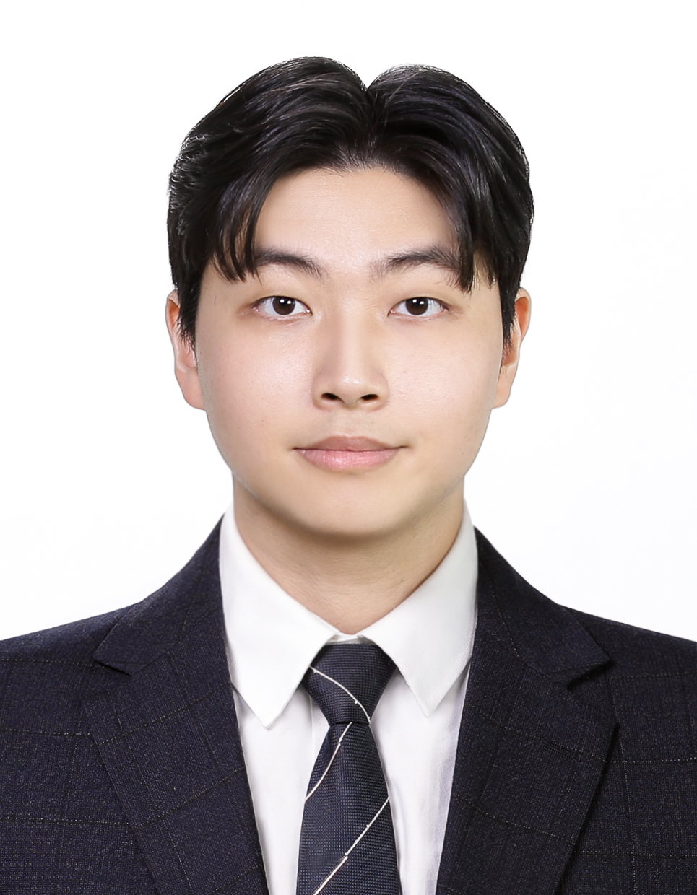

AI/ML Engineer
AI 기술을 활용하여 실시간 데이터 처리 및 최적화 솔루션을 개발합니다. 의료AI부터 통신 네트워크까지, 다양한 분야의 지능형 시스템을 연구합니다.
학업과 다양한 프로젝트를 통해 AI/ML 모델 개발과 데이터 분석 실무 역량을 체계적으로 함양하였습니다. Python, 딥러닝(Deep Learning), 컴퓨터 비전 등 핵심 기술을 보유하고 있으며, 실시간 처리 시스템 개발 및 모델 경량화 경험을 통해 실용적인 AI 솔루션을 구현할 수 있는 전문성을 갖추고 있습니다.
현재는 통신 네트워크 AI 연구에 관심을 가지고 있으며, 기존 AI/ML 경험을 5G/6G 네트워크 최적화, 지능형 트래픽 관리, 실시간 네트워크 모니터링 등에 적용하는 것을 목표로 하고 있습니다. 새로운 기술을 배우고 적용하는 것을 즐기며, 팀원들과 협업하여 혁신적인 솔루션을 만들어내는 것을 추구합니다.
📍 위치: 서울, 대한민국
🎓 학력: 건양대학교 의공학과 전공
💼 분야: AI/ML Engineer
🔬 관심분야: 통신 네트워크 AI 연구
🌐 언어: 한국어, English
✉️ 이메일: anjin0910@gmail.com
🔗 GitHub: github.com/anjin0910-afk
Transformer 기반 RF-DETR 모델과 DINOv2 백본을 적용하여 대장 내시경 영상에서 용종을 실시간으로 검출하는 시스템을 개발했습니다. 의료 데이터의 부족과 클래스 불균형 문제를 해결하기 위해 Elastic Deformation과 Grid Distortion 고급 데이터 증강 기법을 적용하였으며, Weight Pruning과 Query 수 최적화를 통해 경량화를 구현했습니다. 베이스라인 대비 mAP 7% 향상과 22 FPS의 실시간 처리 속도를 달성하여 임상 환경에서의 실용성을 입증했습니다.
VAE(Variational AutoEncoder)를 활용하여 유방암 초음파 영상에서 병변을 자동으로 검출하는 알고리즘을 개발했습니다. 정상 이미지로 학습된 모델이 병변 이미지를 정상 형태로 재구성하고, 원본과의 차영상을 통해 병변을 검출하는 비지도 학습 방식을 적용했습니다. 동적 임계값 이진화 기법을 도입하여 작은 병변에서 40%, 큰 병변에서 90%의 Dice coefficient를 달성하며, 데이터 증강 없이도 안정적인 병변 검출이 가능함을 입증했습니다. 공학혁신상을 수상한 프로젝트입니다.
산업통상자원부, 공학교육혁신센터
2025.11
산업통상자원부와 공학교육혁신센터가 주최하는 성균관대학교 컨소시엄 창의적 종합설계 경진대회에서 동상을 수상했습니다. RF-DETR 기반 실시간 대장 내 용종 검출 시스템을 개발하여 의료AI 기술력을 인정받았습니다.
건양대학교
2025.03 - 2025.10
건양대학교에서 개최한 캡스톤 디자인 경진대회에서 금상을 수상했습니다. RF-DETR 기반 실시간 대장 내 용종 검출 시스템을 주제로 Transformer 기반 의료AI 모델을 개발하여 mAP 7% 향상과 22 FPS의 실시간 처리 성능을 달성했습니다.
충남경제진흥원
2024.12 - 2025.02
충남경제진흥원의 미래내일 일경험 인턴십 프로그램에 참여하여 경영 사무 업무 실무를 경험했습니다. 문서 작성, 데이터 관리, 프로젝트 지원 등 다양한 행정 업무를 수행하며 조직 운영에 대한 이해도를 높이고 효율적인 업무 프로세스를 배웠습니다.
건양대학교
2024.03 - 2024.11
건양대학교 Lab-CORPS 프로그램을 통해 산학협력 프로젝트에 참여했습니다. 기업과 협력하여 실제 산업 문제를 해결하는 프로젝트를 수행하며 실무 역량을 강화했습니다.
건양대학교
2024.03 - 2024.10
건양대학교에서 진행한 캡스톤 디자인 경진대회에 참여하여 VAE 기반 유방암 병변 검출 알고리즘을 개발했습니다. Variational AutoEncoder를 활용한 비지도 학습 방식으로 의료 영상 분석 프로젝트를 성공적으로 구현했습니다.
산업통상자원부, 공학교육혁신센터
2024.03 - 2024.10
산업통상자원부와 공학교육혁신센터가 주최하는 창의혁신 DNA 산학협력 프로그램에서 공학혁신상을 수상했습니다. VAE 기반 유방암 병변 검출 알고리즘 개발을 주제로 산학협력을 통해 실제 의료 문제 해결에 AI 기술을 적용하며 Dice coefficient 40-90%의 성능을 달성했습니다.